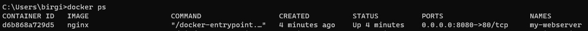
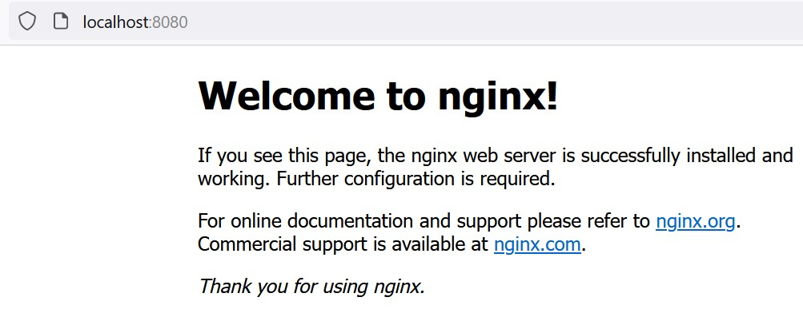
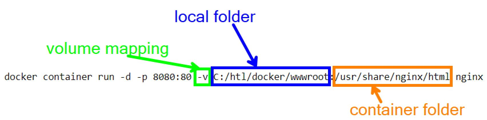

1 Container commands
Ask the AI tutor for this chapter. It knows this chapter and helps you with commands and error messages. You can ask in German or English.
| Operation | Docker CLI command |
|---|---|
| Start a new container | docker run |
| List running containers | docker ps |
| Stop container | docker stop |
| Start a stopped container | docker start |
| Attach to a running container | docker attach |
| Displays processes in container | docker top |
| Run process in container | docker exec |
| Remove container | docker rm |
1.1 Interactive container
docker run --name helloDocker -i -t ubuntu /bin/bash
| | | | |
| | | | +-- Command to run
| | | +--------- Image to start the container from
| | +------------ Allocate a pseudo-TTY
| +--------------- Keep STDIN open (-i -t is usually written as -it)
+---------------------------------- Name of container1.1.1 Exercise:
- Run this command => ubuntu image will be downloaded to the local image cache and a bash prompt is opened.
- Inspect the running ubuntu instance via the bash terminal, for example:
hostname- which name does the container have?cat /etc/os-release- which Linux version is running inside?ps aux- which processes are running? (only very few - compare with your own computer!)ls /- the container has its own file system
- Use another terminal to inspect
- the running docker instance with
docker ps- note the container id is the same as displayed in the bash prompt => by default, the (short) container id is used as the host name of the container. docker imageswill display the downloaded ubuntu image.
- the running docker instance with
- Exit the container instance with typing
exitin the bash prompt.- This also stops the container: a container only runs as long as its main process (here:
bash) runs. - Use
docker ps -ato list all containers, including stopped ones. - Use
docker start <container-id>to restart the stopped container. You can see it now running again withdocker ps, however you are not connected with the bash terminal. - Use
docker attach <container-id>to attach your terminal to the bash prompt again.
- This also stops the container: a container only runs as long as its main process (here:
1.2 Background process
docker run -d ubuntu /bin/bash -c "while true; do echo hello world; sleep 1; done"
|
+---- Detached (= background server process)1.2.1 Exercise:
- Inspect the running container with
docker ps=> note the container-id. - Use
docker logs <container-id>to view the output of the bash command that is running in the container. - Use
docker stop <container-id>to stop this container. - Use
docker ps -ato list the stopped container as well as all other running containers. - Use
docker rm <container-id>to remove the stopped container.
1.2.2 Notes
- It is sufficient to enter only the first few characters of the container id - as long as this prefix is unique and docker is thus able to identify the container.
- You can remove a still running container by using the force option:
docker rm -f <container-id>.
1.3 Nginx Webserver
docker container run is the long form of docker run - both commands do the same.
docker container run -d -p 8080:80 --name my-webserver nginx
| | | |
| | | +------- Image, from which the container is started
| | +--------------------------- Option to specify the container name
| +-------------------------------------- Publish container port 80 (where nginx listens)
| on port 8080 of the host
+----------------------------------------- detached mode (running in background)1.3.1 Exercise
- Run this command
- List the container with
docker ps: It should display- the correct port mapping from the host port
8080to the container port80 - as well as the image
nginx - and the requested container name
my-webserver
- the correct port mapping from the host port
- Check your image cache with
docker images(nginx image should have been pulled from Docker Hub) - Connect to the web service from your favourite browser via
http://localhost:8080. It should display the default index.html for nginx:
- Check the logging of your client connection with
docker logs my-webserver(we can now use the container name instead of the container-id) - Check the processes running inside this container with
docker top my-webserver - Stop and restart the web service with
docker stopanddocker start - Stop the web service again with
docker stop my-webserver, then remove it withdocker rm my-webserver(docker rmrefuses to remove a running container)
1.4 Bind Mounts
For publishing a local html folder in your nginx container, you need to specify a bind mount with the -v option (alternatively: --mount type=bind,source=...,target=...):

Note the colon : between the local folder and the folder inside the container!
If your local folder looks like following, your web browser will display your individual index.html file after connecting to this new web service:
C
+- htl
+- docker
+- wwwroot
+- index.htmlThe command from the picture, to copy (with port 8081, so it does not collide with my-webserver from above):
docker run -d -p 8081:80 -v C:/htl/docker/wwwroot:/usr/share/nginx/html --name my-bind-webserver nginxTip: This repository already contains a folder 01-containers/wwwroot with an index.html. If you open a PowerShell terminal in the 01-containers folder, you can use it with ${PWD} (= current folder):
docker run -d -p 8081:80 -v ${PWD}/wwwroot:/usr/share/nginx/html --name my-bind-webserver nginx(On Linux / macOS, write $(pwd) instead of ${PWD}.)
1.4.1 Exercise:
- Create folder structure + index.html file (or use the
wwwrootfolder of this repository) - Start a new container with a bind mount and a new port mapping - e.g. with 8081 instead of 8080
- Contact this web service with your favourite browser:
http://localhost:8081should show yourindex.html, not the nginx default page - Use
docker inspectto inspect the properties of the new container - Use
docker statsto inspect the performance statistics - Use
docker logsto access the web server log messages - Use
docker exec -it <id> bashto connect to the container in interactive tty mode with a bash terminal. Navigate to the/usr/share/nginx/htmlfolder to inspect the mounted files. - Edit the
index.htmlfile on your host file system, save it and refresh your browser to see the changed content. - Add additional files to the mounted folder and check, if they are reachable via your web browser.
- Clean up:
docker rm -f my-bind-webserver
1.5 Check yourself
When you have finished all exercises, take the self-check quiz for this chapter: 5 short questions, answered in your own words (German or English). The AI gives you feedback on each answer, and you can ask follow-up questions. You can repeat the quiz as often as you like.